<!doctype html><html lang="zh-CN"><meta charset="utf-8"><meta name="viewport" content="width=device-width,initial-scale=1"><title>影生万物 · 交互资产板</title><link rel="stylesheet" href="controls.css"><style>
@font-face{font-family:SM;src:url(../../fonts/shadowmade-sans.woff2)}*{box-sizing:border-box}body{margin:0;color:#f4e5cb;background:#112428;font:15px/1.5 SM,sans-serif}main{max-width:1320px;margin:auto;padding:44px 54px;background:linear-gradient(125deg,#233937,#142a2e 62%,#14262b)}header{display:flex;gap:27px;align-items:center;padding-bottom:22px;border-bottom:2px solid #cf9661}header img{width:94px}strong{font-size:12px;letter-spacing:.27em;color:#e6b976}h1{font-size:34px;letter-spacing:.03em;margin:0}h2{font-size:17px;margin:20px 0 12px;color:#edcfa6}section{border-bottom:1px solid #53615a;padding-bottom:16px}.tiles,.examples{display:flex;gap:8px;flex-wrap:wrap}.tiles a{display:grid;place-items:center;gap:6px;width:86px;padding:9px 0;text-decoration:none;color:#e0d4bf;font-size:13px}.tiles a:hover{background:#364946}.tiles img{width:32px;height:32px;filter:brightness(0) saturate(100%) invert(85%) sepia(30%) saturate(600%) hue-rotate(333deg)}button{font:inherit;cursor:pointer;padding:9px 14px;min-height:44px}.examples{gap:12px;align-items:center}.examples .icon{padding:0}.states{margin-top:13px;font-size:13px;color:#cdbd9f}footer{padding-top:14px;font-size:13px;color:#cfc3ae}@media(max-width:700px){main{padding:22px 16px}header{gap:16px}header img{width:60px}h1{font-size:26px}.tiles a{width:70px}}
</style><main id="control-sheet"><header><div><strong>SHADOWMADE</strong><h1>交互资产板</h1></div></header>
<section><h2>按钮组件</h2><div class="examples"><button class="primary" data-glyph="enter">走进雪镇</button><button data-glyph="exit">离开机关</button><button class="paper" data-glyph="journal">合上纸页</button><button aria-pressed="true" data-glyph="moon">靛蓝雪夜</button><button class="destructive" data-glyph="erase">清除进度并重开</button><button disabled data-glyph="lock">尚未解锁</button><button class="icon" aria-label="静音" data-glyph="chime" aria-pressed="false"></button></div><p class="states">移动指针、按住或使用 Tab 查看状态；点声音徽章查看静音状态。</p></section><section><h2>探索与系统</h2><div class="tiles"><a href="enter.svg" download><span>启程</span></a><a href="play.svg" download><span>继续探索</span></a><a href="pause.svg" download><span>暂停</span></a><a href="skip.svg" download><span>跳过演出</span></a><a href="exit.svg" download><span>离开机关</span></a><a href="close.svg" download><span>关闭</span></a><a href="journal.svg" download><span>线索手记</span></a><a href="chime.svg" download><span>声音开启</span></a><a href="silence.svg" download><span>静音</span></a><a href="restart.svg" download><span>重新开始</span></a><a href="keep.svg" download><span>保留进度</span></a><a href="erase.svg" download><span>清除存档</span></a></div></section><section><h2>地图与地标</h2><div class="tiles"><a href="map.svg" download><span>雪镇地图</span></a><a href="trail.svg" download><span>跟随主线</span></a><a href="plaza.svg" download><span>旋转木马</span></a><a href="clock.svg" download><span>钟楼</span></a><a href="workshop.svg" download><span>影子工坊</span></a><a href="bridge.svg" download><span>运河桥</span></a><a href="market.svg" download><span>灯市码头</span></a><a href="lookout.svg" download><span>松影坡</span></a><a href="pier.svg" download><span>断桥工位</span></a><a href="observatory.svg" download><span>北岸灯塔</span></a><a href="lock.svg" download><span>未解锁</span></a></div></section><section><h2>工坊与归航</h2><div class="tiles"><a href="bench.svg" download><span>光影台</span></a><a href="chart.svg" download><span>墙上星图</span></a><a href="return.svg" download><span>放回木雕</span></a><a href="letter.svg" download><span>守灯人的信</span></a><a href="footsteps.svg" download><span>绕幕行走</span></a><a href="lantern.svg" download><span>长街灯火</span></a></div></section><section><h2>贺卡与资产</h2><div class="tiles"><a href="gift.svg" download><span>贺卡</span></a><a href="panorama.svg" download><span>雪镇全景</span></a><a href="fire.svg" download><span>壁炉暖光</span></a><a href="moon.svg" download><span>靛蓝雪夜</span></a><a href="export.svg" download><span>导出</span></a><a href="model.svg" download><span>三维模型</span></a><a href="snapshot.svg" download><span>实机画面</span></a><a href="archive.svg" download><span>资产归档</span></a></div></section><footer>点击图标下载独立 SVG。</footer></main><script>const b=document.querySelector('.icon');b.onclick=()=>{const on=b.getAttribute('aria-pressed')==='true';b.setAttribute('aria-pressed',String(!on));b.dataset.glyph=on?'chime':'silence';b.setAttribute('aria-label',on?'静音':'开启声音')};</script></html>